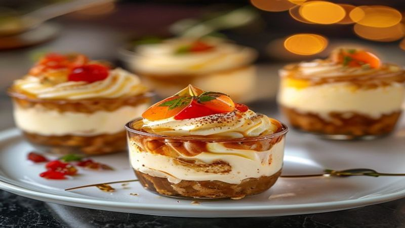

No-Bake Cheesecake Cups | Easy 10-Minute Dessert
These No-Bake Cheesecake Cups are creamy, dreamy, and done in 10 minutes! Individual portions with a graham cracker crust and silky cheesecake filling. No oven required!
Ingredients
- 8 oz cream cheese, softened
- 1/2 cup powdered sugar
- 1 cup heavy whipping cream
- 1 teaspoon vanilla extract
- 1 cup graham cracker crumbs
- 3 tablespoons melted butter
- Fresh berries for topping
- Whipped cream for garnish
Instructions
Want cheesecake without the hassle of baking? These individual cheesecake cups are ready in 10 minutes and taste absolutely divine!
Mix graham cracker crumbs with melted butter. Divide evenly among 6 cups or glasses, pressing firmly to create a crust layer.
Beat softened cream cheese and powdered sugar until completely smooth — no lumps! This is key to a silky filling.
In a separate bowl, whip the heavy cream and vanilla until stiff peaks form.
Gently fold the whipped cream into the cream cheese mixture until just combined. Don't over-mix — you want it light and airy.
Pipe or spoon the cheesecake filling into the cups on top of the crust. Top with fresh berries, a dollop of whipped cream, and graham cracker crumbs.
Chill for at least 1 hour for best results, but they're delicious right away too! These are perfect for parties, date night, or whenever you need an elegant dessert without any effort.